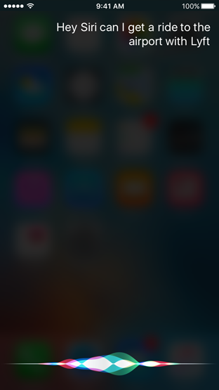

Siri


你的app可以与Siri联动来执行一些任务以应对来自用户的语音命令和问题。
• 音频和视频通话应用（Audio and video calling apps）：拨打电话和查找通话记录
• 消息应用（Messaging apps）：发送消息和阅读收到的消息
• 提供支付服务的应用（Apps that offer payment services）：发送和请求支付
• 管理图片的应用（Apps that manage photos）：查找和显示图片
• 提供交通服务的应用（Apps that offer transportation services）：预定行程和提供行程状态信息
• 提供健身活动的应用（Apps that offer fitness activities）：开始、暂停、恢复、结束和取消锻炼
• 与CarPlay联动的车载软件（Automotive vendors that integrate with CarPlay）：更改车上的音频源、温控系统、除霜设置、座椅温度和无线电台
Siri负责语言处理和语义分析来把语音请求转换成你的app能够处理的操作指令。你的app应该负责定义它所支持的功能、验证收到的信息、为Siri提供它需展示的信息以及采取操作。
在验证信息的时候，如果某些信息丢失或是不明确，你的app可以指示Siri来展示选项，向用户请求确认，或是请求更多信息。按照Siri的逻辑，某些任务比如发送信息和支付，在app执行任务之前首先需要用户确认。
来自你的app的回应信息会由Siri说出来并且呈现在Siri界面。合适的话，你的app可以提供自定义的内容让Siri来展现。比如一个健身app，可能会提供自定义的锻炼信息。
力求一个无需触屏或注视屏幕的声控体验（Strive for a voice-driven experience that doesn’t require touching or looking at the screen.）。用户在使用Siri时不会经常盯着屏幕看。他们可能会通过耳机、汽车或是穿过房间来与Siri互动。尽可能地，让用户在无需解锁屏幕的情况下也能完成任务。
快速应答并且减少交互操作（Respond quickly and minimize interaction.）。用户使用Siri是为了方便，所以不要让他们等待回应。你的app应该在收到请求之后尽快地验证信息以及采取操作。当需要说明和更多信息时，呈现高效且集中的选项以降低需要额外提示的可能性。
将用户直接带到指定内容（Take people directly to content.）。从Sir转换你的app，应该直接去往用户期望的目的地。不要显示中间画面或是信息，阻碍转换过程或是拖慢用户。
保证是相关的、精确的以及合适的（Be relevant, accurate, and appropriate.）。你的app的回应必须和当前的请求相关而且必须精确地反映用户期望。永远不要包含可能会被认为是冒犯或是侮辱人格的内容。
将最安全、价格最低的选项设为默认值（Default to the safest and least expensive option.）。一个应答无论如何都不应该骗人或歪曲信息，尤其是当它会带来经济上的影响时。对于一次涉及不同价位的购买，不要默认选择最贵的。当用户决定付钱时，不要在不告知用户的情况下收取额外的费用。
提升自定义词库的准确性（Increase accuracy with custom vocabulary.）。通过定义那些用户可能会在请求时用到的特殊术语，比如联系人、照片标签、相册名字、路线选择和运动名称，你的app能够帮助Siri去了解更多与执行你应用操作有关的内容。这些术语必须在你的app中是非一般的、特殊的，并且用户可能会在发起请求时真正用到。这些你提供的词汇不能包含其它应用的名字、与其它app明显相关的术语、不合适的语言或是被系统占用的短语，比如“Hey Siri”。记住任何你定义的术语都会被Siri用来解决用户请求，但是并不保证一定能够被识别。
提供请求例句（Provide example requests.）。为Siri提供例句，当用户点击Siri界面的帮助按钮时这些例句就会被展现在指南里。使用这些例句引导用户如何以最简单高效的方式通过Siri来使用你的app。
确保你的自定义界面与Siri很好的融合（Make sure your custom interface integrates well with Siri.）。你可以使用app特有的颜色、象征性图像或是其它设计元素来表达品牌风格，但是任何自定义界面元素必须让人感觉它们仍然适合于Siri界面。
不要在自定义界面包含你的app名字和图标（Don't include your app name or icon in your custom interface.）。系统会自动展示这些信息。
不要打广告（Don't advertise.）。属于你应用的Siri体验永远都不能包含广告、营销或是app内购买的推销。
不要试图模仿或是操控Siri（Don't attempt to mimic or manipulate Siri.）。你的应用永远都不能模仿Siri，也不能试图复制由Siri提供的功能，或是提供一个来自于Apple公司的应答。
了解更多开发细节，请参阅SiriKit Programming Guide。
